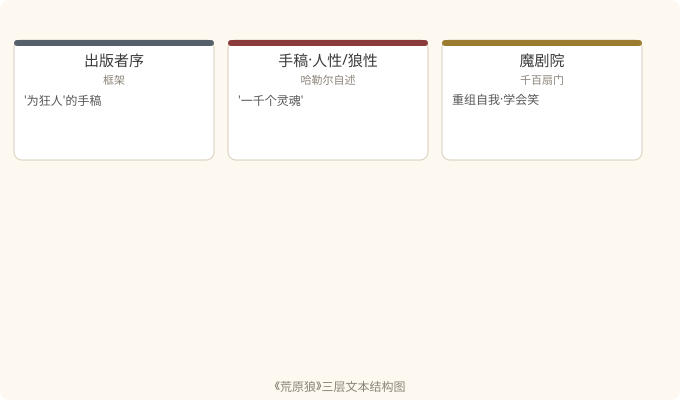

荒原狼
一、基本信息
| 作者 | 黑塞 |
|---|---|
| 成书/出版 | 1927年出版（Britannica） Hermann Hesse — Encyclopaedia Britannica（百科全书） |
| 国别/地区 | 德国 |
| 时代 | 现当代 · 20世纪 |
| 体裁 | 长篇小说 |
| 语言 | 德语 |

《荒原狼》三层文本结构图（主题·结构图）
二、创作背景
主人公哈利·哈勒尔——'荒原狼'：'每个人都是一千个灵魂的混合体'——'人性与狼性'的二元（通说）。
文化背景：1920s德国——战争阴影、爵士时代与资产阶级文明的黄昏（通说）。
三、内容脉络
手稿框架：出版者序——哈勒尔留下的手稿《哈利·哈勒尔自述——只为狂人》（通说）。
哈勒尔：年约五十的隐士学者——厌恶市民生活、赞歌与莫扎特、'狼性'（通说）；遇'魔剧院'小册子《论荒原狼——只为狂人》。
魔剧院：赫米娜与爵士萨克斯手巴勃罗——'魔剧院'的千百扇门：教育与战争、爱情与性的'重组'（通说）。
结局：'永生者'（莫扎特与歌德）的嘲笑与'绞刑幽默'——哈勒尔学'笑'（结尾原文意，通说待核）。
四、主要人物表
| 人物 | 身份 | 说明 |
|---|---|---|
| 哈利·哈勒尔 | 隐士学者 | '人性/狼性'的二元者 |
| 赫米娜 | 赫米娜 | 哈勒尔'镜像'的女性（通说） |
| 巴勃罗 | 萨克斯手 | 魔剧院的引路人 |
| 莫扎特 | '永生者' | 结尾的'导师'形象（通说） |
五、主题与艺术特点
- 二元与'一千个灵魂'：超越'人性/狼性'的多元自我（通说）。
- '市民世界'的批判（通说）。
- '幽默'与'永生者'：'幽默'是'达到自由的途径'（通说待核）。
六、影响与评论
- Britannica（Hesse 条）：Der Steppenwolf (1927) 列于 major works。
Hermann Hesse — Encyclopaedia Britannica（百科全书） - 1960s—70s英语青年'cult'（Britannica：cult figure——书名成为Steppenwolf乐队名——通说待核）。
Hermann Hesse — Encyclopaedia Britannica（百科全书）
七、阅读建议
难点
- 三层文本（出版者序/手稿/魔剧院）——结构读法。
- '魔剧院'的超现实段——卡夫卡式（通说待核）。
- 谢莹莹译《荒原狼》（上海译文出版社，通说待核）。
- 英译：Basil Creighton（通说待核）。
通读 → 精读'魔剧院'章与结尾'莫扎特与笑' → 对照《悉达多》。
八、待核实
- 1927年 S. Fischer 出版细节待核。
- 谢莹莹译本信息待核。
- Steppenwolf 乐队（1967）书名借用待核。